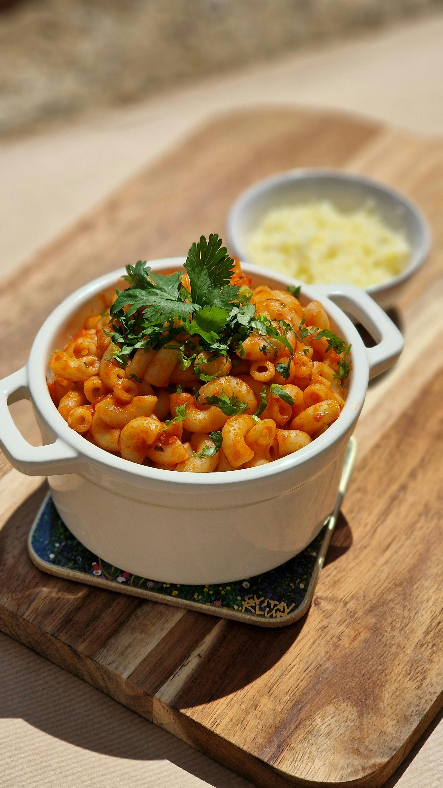

Mac and Cheese

Description:
This homemade mac and cheese is topped with buttered bread crumbs for pure comfort food.
It's easy to make the cheese sauce from scratch, starting with a roux and adding
milk, Cheddar, and Parmesan to make a rich, decadent sauce that coats every nook and cranny of the noodles.
Ingredients
Macaroni and Cheese:
- 8 ounces uncooked elbow macaroni
- ¼ cup salted butter
- 3 tablespoons all-purpose flour
- 2 ½ cups milk, or more as needed
- 2 cups shredded sharp Cheddar cheese
- ½ cup finely grated Parmesan cheese
- Salt and ground black pepper to taste
Bread Crumb Topping:
- 2 tablespoons salted butter
- ½ cup dry bread crumbs
- 1 pinch ground paprika
Directions:
- Gather all ingredients. Preheat the oven to 350 degrees F (175 degrees C). Grease an 8-inch square baking dish.
- To make the macaroni and cheese: Bring a large pot of lightly salted water to a boil. Add macaroni and simmer, stirring occasionally, until tender yet firm to the bite, about 8 minutes;
it will finish cooking in the oven. Drain and transfer to the prepared baking dish.
- While the macaroni is cooking, melt ¼ cup butter in a medium skillet over low heat.
Whisk in flour and stir until the mixture becomes paste-like and light golden brown, 3 to 5 minutes.
- Gradually whisk 2 ½ cups milk into the flour mixture, and bring to a simmer.
- Stir in shredded Cheddar and finely grated Parmesan cheeses; season with salt and pepper.
Cook and stir over low heat until cheese is melted and sauce has thickened, 3 to 5 minutes, adding up to ½ cup more milk if needed.
- Pour cheese sauce over macaroni and stir until well combined.
- Make the bread crumb topping: Melt 2 tablespoons butter in a skillet over medium heat. Add bread crumbs; cook and stir until well coated and browned.
- Spread bread crumbs over macaroni and cheese, then sprinkle with paprika.
- Bake in the preheated oven until topping is golden brown and macaroni and cheese is bubbling, about 30 minutes.
Back to Homepage